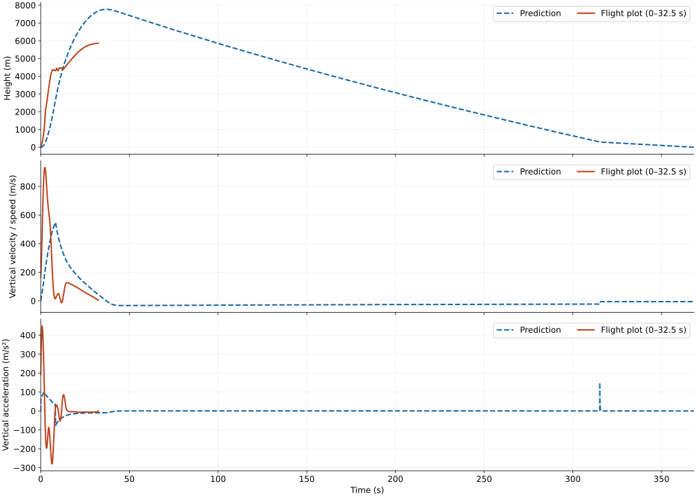

Bring the systems together. Check how they separate.
AVIONICS BAYGPS + REDUNDANT ALTIMETERS
Role
Avionics & Recovery, Systems Liaison
Competition
FAR 51025
Scope
Integration, packing, GPS tests
Team
UMBRA, Cal Poly Pomona
~3,900 ftreported test flight, complete vehicle recovered
5.90 miGPS field test with a stable link between sites
2parachutes in the recovery layout, drogue and main
Integration & packing
Detail B · Electronics meet recovery
The avionics bay carried GPS, redundant altimeters, batteries and wire access on a printed sled between two bulkheads, housed in an avionics coupler. Threaded rods connect the bulkheads, with harness loops at both ends.
Launch checklist
Line condition.
Coordinated main-parachute folding.
Pack fit.
Harness connections across payload and avionics bay.
Open compartment and recovery harness during field preparation. June 3, 2023.
Recovery loads and bay dimensions
The instantaneous shock-force plots report peak loads of 424.82 lb for the main parachute and 942.48 lb for the drogue. Both plots also show velocity in ft/s over the opening interval.
The avionics-bay drawing specifies dimensions in inches, including Ø6.00 bulkheads and a 7.80 axial dimension. The team practised main- and drogue-parachute folding and packing alongside the recovery-system work.
Testing
Detail C · Troubleshoot, then repeat
Test 1 · Altimeters
Fix the chamber, then repeat.
Vacuum-chamber tests hit calibration problems. Troubleshooting and repeat tests checked the altimeters alongside recovery pop tests.
Test 2 · Flight
Recovered intact, with an early deployment.
The main parachute deployed prematurely. Follow-up pop tests investigated retention at the main-parachute and avionics-bay connection.
Test 3 · GPS range
From tracker comparison to range test.
Featherweight led the first comparison; the team later selected Big Red Bee. I ran the 5.90-mile field test, with packets received at intervals of 5–20 seconds.
Singularity test launch, April 1, 2023. The camera follows liftoff and the smoke trail into the sky. UMBRA / Cal Poly Pomona team footage. Liftoff and initial climb, from the June 3 media collection. The rocket rises from the pad as the camera follows its white smoke trail. Silent 12-second excerpt.Field preparation
Field preparation during the Singularity return-to-flight campaign. UMBRA / Cal Poly Pomona.
Launch recording
Height, speed and acceleration retraced from the EasyMini-v3.0 9174 flight 6 plot.
The image labels boost at approximately 0 s and coast at approximately 3.9 s.
Prediction & flight
The model predicts an apogee of 7.77 km at 37 seconds. Over the first 32.5 seconds, the flight plot shows a faster initial climb, followed by a lower height than the prediction.
Predicted vertical acceleration alongside the flight plot.
Full flight: ascent and descent

Prediction through landing. The flight plot covers 0–32.5 seconds.
Physics assumptions
Vehicle geometry, component masses and the corrected thrust curve define the model.
Standard atmosphere, sea-level launch, a vertical 1 m launch rod, and 2 m/s wind with 10% turbulence.
A 4 ft drogue opens at apogee; a 14 ft main opens at 1,000 ft. Predicted main deployment speed: 22.6 m/s. Aerodynamic uncertainty increases at supersonic speed.
Common launch-time and height origins are assumed. Flight curves are traced from the launch image through 32.5 seconds; speed and acceleration follow its barometric-derived labels.
Opening shock depends on canopy inflation time, suspended mass and harness stretch.